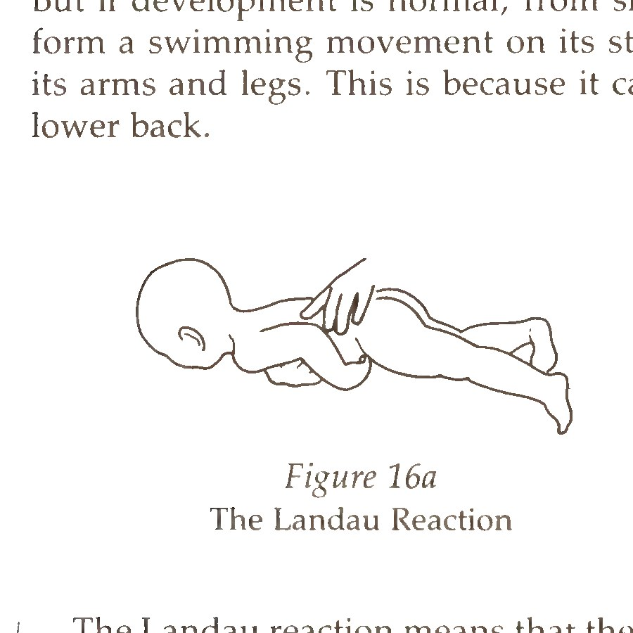
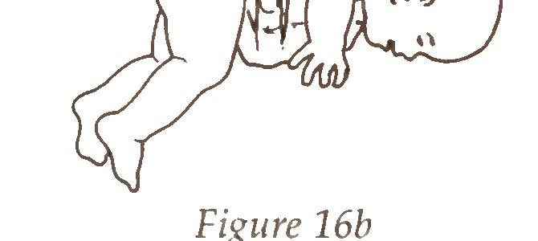

Người ta luôn ngạc nhiên khi phát hiện ra rằng mình đang làm những điều mà mình không nhận biết. Điều này là vì người lớn tự hào giữ vững ảo tưởng rằng họ luôn ý thức được những gì mình đang làm. Bởi không ý thức được những gì mình đang làm bị coi là một dấu hiệu của sự kém cỏi, thậm chí vô trách nhiệm. Tuy nhiên, những hành động mà ta không hề hay biết ấy có những hệ quả lớn trong cuộc đời ta. Một trong số đó, giờ đây ta đã biết, là phản ứng rút lui, khi bụng, vai và cổ ta co lại trong lo sợ — phản xạ Đèn Đỏ. Có một phản ứng khác cũng xảy ra liên tục, nhưng lần này là khi ta cảm thấy được gọi, không phải để rút lui, mà để hành động: phản xạ Đèn Xanh.
Phản xạ Đèn Xanh gần như có thể được coi là cần thiết cho xã hội công nghiệp, vì để tạo ra một nền kinh tế công nghiệp, phản xạ này phải được kích hoạt liên tục trong toàn bộ dân chúng. Nó cũng là một phần của xã hội thế kỷ hai mươi như đồng hồ báo thức, lịch, cà phê, hạn mức, hoa hồng bán hàng và thời hạn — mỗi thứ trong đó đóng vai trò là một cái roi thúc vào phản xạ ăn sâu này.
Trong xã hội chúng ta, 80 phần trăm dân số trưởng thành bị đau lưng. Rõ ràng là sự tiến bộ của công nghệ dựa trên những cái lưng ngày càng xuống cấp. Điều này thật trớ trêu, vì trong xã hội công nghệ đương đại của chúng ta, phần thưởng cho việc thoát khỏi lao động chân tay nhức nhối lẽ ra phải là được tự do khỏi những cơn đau thể chất ấy. Thêm trớ trêu nữa, y học thế kỷ hai mươi đã cực kỳ thành công trong việc kéo dài tuổi thọ của ta đến mức giới hạn mà gen của ta cho phép. Đồng thời, tuy nhiên, nó lại cực kỳ thất bại trong việc chống lại — thậm chí là hiểu — căn bệnh dịch mà giờ đây ta thấy: đau mạn tính ở sọ, cổ, vai, lưng và mông của toàn bộ dân số trưởng thành. Như René Caillet, một chuyên gia nổi tiếng về phục hồi chức năng y tế, đã nhận xét, “đau lưng dưới vẫn là một điều bí ẩn của xã hội hiện đại và một tình huống khó xử lớn cho ngành y.” Đó là rối loạn phổ biến nhất khiến người ta tìm đến sự trợ giúp y tế. Hơn nữa, đó là nguyên nhân phổ biến nhất gây vắng mặt tại nơi làm việc trong các xã hội công nghiệp. Đó là rối loạn chung mà người ta chi tiêu nhiều tiền nhất cho bảo hiểm, dịch vụ dược phẩm và y tế — tính bằng hàng tỷ.
Làm sao một điều gì đó đau đớn đến thế, mang tính dịch bệnh đến thế, gây hại cho xã hội đến thế, và tốn kém đến thế lại có thể ít được hiểu biết và xử lý kém đến thế? Làm sao
các nhà nghiên cứu y học và bác sĩ hành nghề, những người nghiên cứu và điều trị đau lưng, lại có thể không may mắn đến mức chính họ cũng bị đau lưng? Với tư cách là một điều bí ẩn y học, nó là nguyên nhân gây xấu hổ phổ biến.
Câu trả lời cho câu hỏi này chạm đến một điều mà ta vừa nhắc đến: Chúng ta liên tục làm những việc có hệ quả lớn trong cuộc đời ta, nhưng ta lại hoàn toàn không hay biết rằng mình đang làm chúng. Điều này là vì, rõ ràng là, ta không thể nhận biết những sự kiện cơ thể đang xảy ra một cách vô ý thức. Hơn thế nữa, ta — và các nhà lãnh đạo doanh nghiệp, các nhà hoạch định xã hội, và các nhà nghiên cứu y học — sẽ sửng sốt khi biết rằng chính ta vô ý thức gây ra cơn đau của mình. Không ý thức được nỗi đau tự gây ra có thể giống như một dấu hiệu của sự kém cỏi và vô trách nhiệm, nhưng vấn đề còn sâu xa hơn thế.
Chúng ta chưa giải quyết được vấn đề này, vì chúng ta chưa — cho đến nay — hiểu được nó. Và chúng ta chưa hiểu nó, vì câu trả lời đã bị che giấu khỏi ta, như thể, trong những khe sâu của ý thức; hay, chính xác hơn, bên dưới sự kiểm soát có ý thức của vỏ não, nơi khởi phát các cử động tự nguyện. Nó nằm ẩn trong những vùng thấp hơn của bộ não, trong một phản xạ mà lại quá quen thuộc, quá vô ý thức, và quá thuộc về con người đến mức nó vô hình đối với ta mà vẫn hiện diện mãi, như chính hơi thở ta hít. Đó là một phản xạ có chức năng rất cụ thể: Nó chuẩn bị cho ta hành động. Và, vì ta sống trong một thế giới mà các chương trình hành động đáng tin cậy và được lên lịch chính xác là chất bôi trơn thiết yếu của bánh xe thương mại, nên phản xạ của ta liên tục bị kích hoạt cho đến khi nó trở thành thói quen trong chức năng cơ thể ta.
Không hiểu bản chất phản xạ của những rối loạn lưng phổ biến này, ta nhìn hiện tượng dịch bệnh này như một điều bí ẩn khoa học. Caillet nhận xét:
Một điều bí ẩn vẫn còn đó là không có tính phổ quát hay sự chuẩn hóa nào trong các rối loạn đau lưng dưới. Thuật ngữ “hội chứng” vẫn phải được giữ lại trong thuật ngữ ngày nay mà không được làm rõ hay hiểu theo cách thống nhất. Vì thế, đau lưng dưới vẫn là một triệu chứng có nguyên nhân mơ hồ. Nhiều thuật ngữ thịnh hành trong các tài liệu, cùng với các cơ chế không đặc hiệu và, do đó, các phác đồ điều trị không đặc hiệu. Những thuật ngữ như bong gân thắt lưng–cùng, lưng không ổn định, bệnh đĩa đệm thắt lưng, hội chứng khớp liên đốt, hội chứng cơ hình lê, bong gân dây chằng chậu–thắt lưng, đau cơ vuông thắt lưng, viêm cơ mạc, hẹp ống sống, bệnh đĩa đệm thoái hóa, hội chứng cơ lưng rộng, dây chằng qua lỗ liên đốt bất thường, hội chứng tam giác cơ đa chẻ, và còn nhiều thuật ngữ khác nữa đang được ưa chuộng hiện nay. Mỗi chẩn đoán được đánh giá và điều trị với mức độ thành công khác nhau. Điều trị có thể bao gồm tiêm steroid ngoài màng cứng, nắn chỉnh, cắt rễ thần kinh, đốt điện, liệu pháp hóa học, và tiêm vào khớp liên đốt, bên cạnh những tiêu chuẩn đã được tôn sùng từ lâu là nghỉ ngơi, huấn luyện tư thế, kéo giãn, dùng thuốc, và tập luyện có hệ thống.
Nói cách khác, sự lúng túng trong y học: bắn ra mọi hướng vì không biết cần nhắm vào cái gì.
Khi các nhà chức trách y tế bộc lộ sự lúng túng như vậy trước một vấn đề sức khỏe ảnh hưởng đến đa số dân chúng, họ càng làm tăng thêm sự xấu hổ khi cố gắng giải thích cho qua chuyện. Trong một thời gian dài, giới y học đã ủng hộ huyền thoại rằng các rối loạn lưng là tự nhiên và không thể tránh khỏi.
Khái niệm vô lý nhưng lan truyền rộng rãi và phi khoa học này được Leon Root, M.D., tóm tắt súc tích: “Điều mà ta có thể nói mà không bị tranh cãi là sự thay đổi của con người từ bốn chân sang hai chân, và sự thay đổi đi kèm trong cấu trúc lưng của anh ta, là lý do chính, nếu không phải là lý do duy nhất, cho sự phổ biến của đau lưng dưới ở con người.” Tiến sĩ Root tuyên bố những điều vô nghĩa ấy mà không sợ bị tranh cãi. Điều này là vì, trước sự lúng túng, người ta ít nhất phải đổ lỗi cho một cái gì đó — bất chấp mọi điều ta biết về đột biến và chọn lọc tự nhiên và lợi thế tiến hóa khổng lồ của tư thế thẳng đứng ở con người. Và ta sẽ khôn ngoan nếu không đổ lỗi cho Chúa, hay cho tiến hóa — cả hai đều không nổi tiếng về việc phạm sai lầm trong thiết kế. Cột sống con người là một cấu trúc kỳ diệu. Nó được thiết kế sao cho trung tâm trọng lực của nó cao nhất có thể, nhằm cho phép khả năng vận động tối đa với mức tiêu hao năng lực nhỏ nhất có thể. Hơn nữa, cột sống thẳng đứng cho phép con người đi lại, một đặc điểm đã làm cho sự tiến hóa của bàn tay và bộ não độc đáo của con người trở nên khả thi.
Rõ ràng là huyền thoại về các rối loạn lưng cũng đi theo cùng một đường lối lập luận sai lầm như huyền thoại về lão hóa: bằng một cách nào đó, một sự hỏng hóc cấu trúc “không thể tránh khỏi” đang diễn ra. Cả hai đều sai. Lý do cho sự phổ biến của các rối loạn lưng là sự hỏng hóc không nằm ở cấu trúc mà ở chức năng của lưng. Đây là một điểm then chốt. Một cấu trúc bị gãy không thể được làm mới lại, nhưng một chức năng bị rối loạn thì có thể; hơn nữa, nó thậm chí còn có thể được cải thiện.
Trong năm đầu đời, một cuộc phiêu lưu đang diễn ra. Đó là sự khám phá các cơ ở lưng. Và khoảnh khắc thú vị nhất của cuộc phiêu lưu ấy là sự khám phá ra phản xạ Đèn Xanh. Khi phản xạ Đèn Xanh lần đầu bật vào hoạt động, bé người nhỏ bé cảm thấy phấn khích trước cảm giác tự mình di chuyển về phía trước trong không gian. Cảm giác ấy, và sự hứng thú của việc khám phá theo sau nó, tiếp tục suốt toàn bộ chiều dài của đời người.
Khi mới sinh, em bé là một khối mềm mại, đáng yêu gồm toàn những cử động gập về phía trước, giúp bé bám vào cơ thể mẹ. Bé chưa thể ngẩng đầu, cong lưng, hay nâng đỡ thân mình khi ngồi. Các cơ lưng của bé chưa hoạt động. Vì thế, trong những tuần đầu, em bé người chỉ có một chiều: Các cơ ở phía trước cơ thể hoạt động mạnh; các cơ ở phía sau thì hoàn toàn không hoạt động — chúng, như thể, vẫn đang ngủ.
Nhưng không lâu lắm. Chẳng bao lâu, vào tháng thứ ba, em bé làm một điều kinh ngạc. Cơ thể nhỏ bé của bé bắt đầu nâng cái đầu to lớn của mình lên, như thể đó là việc quan trọng nhất thế giới. Đúng là vậy. Khi nằm sấp, bé ngẩng đầu để mặt bé thẳng đứng và miệng bé nằm ngang. Điều này cho phép bé học được hai điều tuyệt vời: một cảm giác thăng bằng ở đầu và một cảm giác về đường chân trời qua mắt. Những điều này, hơn nữa, lại quan trọng vì những lý do rất mang tính con người. Khi cái đầu nhỏ ngẩng lên và học cách cân bằng với mặt đất, em bé đang tự dạy mình những yếu tố đầu tiên của
chức năng đứng và đi. Những chức năng này, được lập trình sẵn về mặt di truyền, từ đó được theo đuổi với một sự thèm muốn lớn.
Việc khám phá cách nâng và cân bằng đầu chỉ làm tăng thêm sự thèm muốn phiêu lưu. Em bé giờ đây có thể co các cơ phía sau cổ nhưng vẫn chưa thể co những cơ nằm xa hơn ở phía sau cơ thể. Những cơn giãy giụa thiếu kiên nhẫn kết hợp với sự triển khai thiếu kiên nhẫn của các đặc điểm di truyền khác nhau đưa đứa trẻ đến một thành tựu chiến thắng vào khoảng năm tháng tuổi: Bé bắt đầu cong lưng lên. Nhưng chưa hết. Cùng lúc, bé học cách nâng và duỗi thẳng cánh tay và chân.
Ở giai đoạn này, năm đến sáu tháng, một phản ứng trọng lực mới đã xuất hiện: phản ứng Landau (xem Hình 16a). Bằng cách giữ em bé với một bàn tay dưới ngực và nâng bé lên, không chỉ đầu bé ngẩng lên mà — lần đầu tiên — lưng bé cong lên và chân bé duỗi ra. Những cơ cần thiết cho việc đứng và đi trở nên sống động. Đó là phản ứng Landau. Đó là một giai đoạn phát triển then chốt của con người nhỏ bé. Nếu nó vắng mặt ở sáu tháng (xem Hình 16b), đó là dấu hiệu cho thấy có điều gì đó nghiêm trọng có thể đang sai — ví dụ, bại não. Nhưng nếu sự phát triển bình thường, từ sáu tháng trở đi, em bé người có thể thực hiện một động tác bơi trên bụng trong lúc ngẩng đầu và cử động tay chân. Đó là vì giờ đây bé có thể cong những cơ khỏe ở lưng dưới.

Hình 16a: Phản ứng Landau

Hình 16b: Sự vắng mặt của phản ứng Landau
Phản ứng Landau có nghĩa là em bé giờ đây có thể làm một điều còn phấn khích hơn cả “bơi.” Khi bé cong lưng, duỗi thẳng đầu gối đang gập, bé có thể đạp vào sàn và đẩy đầu về phía trước: nói cách khác, giờ đây bé có thể tự di chuyển trong không gian! Đó là sự khám phá trọn vẹn phản xạ Đèn Xanh. Cho đến lúc này, em bé giống như một cái cây hơn, bén rễ vào một chỗ. Nhưng giờ đây, con người non nớt này không chỉ có thể tiến về phía một mục tiêu mà còn có thể chọn lấy mục tiêu ấy, hăng hái kích hoạt các cơ lưng và duỗi chân trong niềm phấn khích mới mẻ của sự di chuyển.
Chính sự co các cơ lưng dưới khởi phát phản ứng Landau. Khi các cơ thắt lưng nối mặt sau của khung chậu với các đốt sống co lại, em bé có hai cảm giác đồng thời: đang đi lên, và đang đi tới. Đó là một cảm giác thích thú. Nhưng sự co thắt lưng ấy đi kèm với sự căng hiệp đồng của các cơ ở cổ, vai, mông,
và đùi. Chúng cũng là một phần của phản ứng Landau và cần thiết cho tư thế thẳng đứng của cơ thể khi đứng và đi.
Phản xạ Đèn Xanh là mặt trái của phản xạ Đèn Đỏ, cả về hoạt động cơ bắp lẫn chức năng thích nghi. Phản xạ Đèn Đỏ co các cơ gập phía trước, cuộn cơ thể về phía trước; phản xạ Đèn Xanh co các cơ duỗi phía sau, nâng và cong lưng theo hướng ngược lại. Chức năng thích nghi của phản xạ Đèn Đỏ là bảo vệ; nó là sự rút lui khỏi thế giới. Phản xạ Đèn Xanh thì mang tính khẳng định; chức năng của nó là hành động, và nó cũng mang tính thích nghi. Cái này làm ta dừng lại, cái kia làm ta tiến tới. Vì thế, chúng ở trạng thái cân bằng, và cả hai đều cần thiết cho sự sinh tồn của ta. Chúng cũng cần thiết như nhau cho cảm giác khỏe mạnh của ta.
Việc kích hoạt cả hai phản xạ này đều đòi hỏi một sự tiêu hao năng lượng. Nhớ lại nhận định của Selye rằng stress là phản ứng trước cả những điều tốt lẫn những điều xấu, ta có thể nói rằng cả hai phản xạ đều gây stress. Nếu phản xạ Đèn Đỏ là sự đau khổ tiêu cực, thì phản xạ Đèn Xanh là sự đau khổ tích cực, cái mà Selye gọi là eustress (stress lành). Vì thế, phản ứng hành động là một hình thức tiêu hao năng lượng tích cực.
Từ tháng thứ sáu trở đi, phản ứng Landau ngày càng mạnh. Chẳng bao lâu đứa trẻ học cách lật từ nằm ngửa sang nằm sấp và ngược lại. Một bé gái có thể ngồi thăng bằng ở tám tháng và đã bắt đầu tự kéo mình đứng dậy. Đến chín tháng, bé có thể bò bằng tay và đầu gối. Chẳng bao lâu sau bé di chuyển bằng tay và chân. Đến mười tháng, bé có thể xoay người và đi khi bám vào đồ nội thất. Không lâu sau đó bé tự đi được. Ngay khi làm được điều đó, bé muốn chạy! Thế giới giờ đây mở ra trước bé, và niềm phấn khích ban đầu của sự di chuyển đã mở rộng thành một cuộc phiêu lưu khám phá và phát hiện không ngừng.
Từ thời thơ ấu qua tuổi thiếu niên và tiếp tục đến tuổi vị thành niên, con người non nớt cực kỳ hoạt động. Phản ứng hành động được kích hoạt đi đi lại lại khi những đứa trẻ lao mình vào thế giới quanh chúng. Phản xạ Đèn Xanh, tập trung ở lưng dưới, vô ý thức đi trước và chuẩn bị cho bé trước mỗi hành động tích cực. Trẻ em được thúc đẩy khám phá. Hoạt động của chúng tự phát và thường vui vẻ. Nhưng khi lớn lên, chúng bắt đầu học được một lý do khác cho hành động: trách nhiệm. Chúng học rằng có những việc chúng “phải làm.” Chúng phải làm bài về nhà. Chúng phải làm việc nhà. Chúng phải tắm, và chúng phải đi học. Chúng phải thực hiện ngày càng nhiều hành động mà chúng không được thúc đẩy tự phát để làm. Chúng đang học ý nghĩa của việc trở thành những người lớn có trách nhiệm.
Người lớn phải kiếm sống và có thể tự chăm sóc mình — dù họ muốn hay không. Phản xạ Đèn Xanh vẫn đang được kích hoạt, nhưng niềm phấn khích thì đang biến mất nhanh chóng. Các cơ ở lưng, giờ đã được thuần phục hoàn toàn, đang được kích hoạt ngày càng nhiều hướng về những trách nhiệm của cuộc sống. Người ta càng có trách nhiệm thì các cơ lưng càng thường xuyên bị kích hoạt.
Chúng ta phải thừa nhận rằng những khía cạnh gây stress của lão hóa bắt đầu từ sớm trong cuộc đời, thường là ở tuổi vị thành niên. Vai trò của người lớn khác nhau giữa các nền văn hóa; một số nơi có tính gây stress hơn những nơi khác. Trong các xã hội công nghiệp của thế kỷ hai mươi,
tuổi trưởng thành gây stress rất cao. Đồng hồ, lịch, hạn mức, hoa hồng bán hàng và nhiều tách cà phê đều là những phần không thể thiếu của vai trò người lớn. Hiệu quả chung là một lượng lớn stress được tạo ra. Hiệu quả cụ thể là sự co thói quen của các cơ ở lưng.
Trong xã hội chúng ta, hầu hết mọi người bắt đầu “già đi” từ sớm trong cuộc đời. Công nghệ của ta cho phép ta sống thọ, nhưng nó cũng kết án ta phải sống những năm ấy trong khó chịu và mệt mỏi. Một xã hội công nghiệp được tiếp nhiên liệu bằng năng lượng của phản xạ Đèn Xanh, được kích hoạt không ngừng. Sự lặp lại không ngớt này đảm bảo rằng các sự co cơ của phản xạ sẽ liên tục và mang tính thói quen. Phản ứng hành động diễn ra đều đặn đến mức, cuối cùng, ta thôi không nhận ra nó nữa. Nó trở thành tự động, phai vào quên lãng. Đó chính là chứng quên cảm giác–vận động (SMA), và một khi nó chiếm quyền, ta không còn có thể kiểm soát phản xạ Đèn Xanh. Điều ta cảm nhận chỉ là mệt mỏi, đau nhức và đau — ở phía sau đầu, ở cổ, vai, lưng trên, lưng dưới và mông.